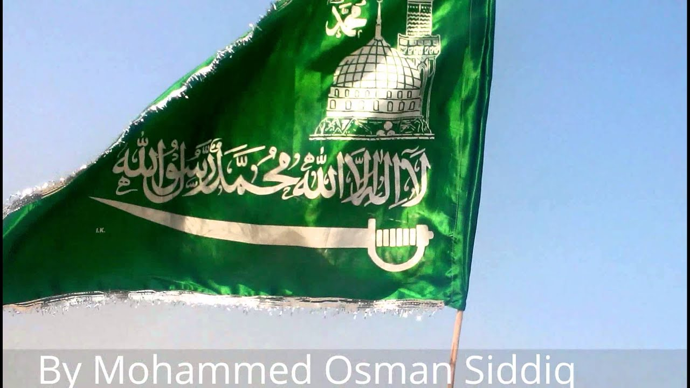

َا إِلَٰهَ إِلَّا ٱللَّٰهُ ل مُحَمَّدٌ رَسُولُ ٱللَّٰ
This phrase, called the shahada, شَهَادَة (šahāda) or shahadatayn, شَهَادَتَيْنِ (šahādatayni), or Muslim creed, is the declaration of belief in the oneness of God and in Muhammad as His messenger. Recitation of the shahada is considered one of the five pillars of Islam by Sunni Muslims. By sincerely stating the shahada aloud before two witnesses, one is considered to have converted to Islam. In addition to excluding the other messengers of God, the second part of the shahada is viewed by Quranists as unnecessary shirk, and they may instead substitute the following: وَحْدَهُ لَا شَرِيكَ لَهُ (waḥdahu lā šarīka lahu).

Islam:
Islam (/ˈɪslɑːm/;[a] Arabic: اَلْإِسْلَامُ, romanized: al-’Islām , [ɪsˈlaːm] (About this soundlisten) "submission [to God]")[1] is an Abrahamic monotheistic religion teaching that Muhammad is a messenger of God.[2][3] It is the world's second-largest religion with 1.9 billion followers, or 24.9% of the world's population,[4][5] known as Muslims. [6] Muslims make up a majority of the population in 47 countries. [7][8] Islam teaches that God is merciful, all-powerful, and unique,[9] and has guided humanity through prophets, revealed scriptures, and natural signs.[3][10] The primary scriptures of Islam are the Quran, believed to be the verbatim word of God, as well as the teachings and normative examples (called the sunnah, composed of accounts called hadith) of Muhammad (c. 570 – 632 CE).[11]